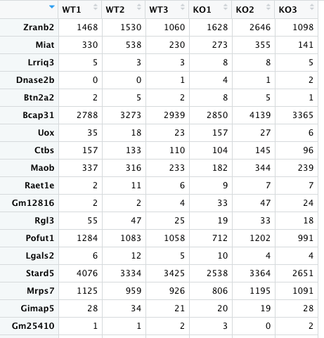

Load count matrix and explore
Objectives
- Load the count matrix in R and perform initial exploratory analysis
Questions
- How to import a count-matrix in R?
- How to perform exploratory analysis of the count-matrix?
The gene-count matrix
- The gene-count matrix was generated in the below folder using the nfcore-rnaseq pipeline:
~/base_directory/working_directory/results/star_salmon/salmon.merged.gene_counts.tsvThe input to this pipeline were sub-setted fastq files from 6 samples which were mapped to the
chr18reference of mouse. This was done so that the excecution of thenfcore-rnaseqpipeline can be demonstrated on our small-sized training VMs(2 cpus and 8 GB RAM)in quick time(~ 20 mins).However, for today’s session, we will be using a pre-computed gene-count matrix which was generated by aligning the full set of reads to the complete mouse genome.
This file was downloaded previously along with the other files from cloudstor and is named as
Full_count_matrix.txt. It is available in the path as
~/base_path/working_directory/Full_count_matrix.txtWorking in RStudio
R-markdown
- R Markdown is a file format for making dynamic documents with R.
- An R Markdown document is written in markdown (an easy-to-write plain text format) and contains chunks of embedded R code, like the document shown below.

Open a R-markdown file

- From here on we will be running individual chunks of code in the R-markdown document and follow
Load the R-libraries
- Import all the R libraries/packages which will assist us at various steps in the analysis.
suppressMessages({
library("DESeq2")
library("edgeR")
library("limma")
library("RColorBrewer")
library("gplots")
library("ggplot2")
library("EnhancedVolcano")
library("factoextra")
library("devtools")
library("rstudioapi")
library("dplyr")
library("tibble")
library("tidyverse")
library("pheatmap")
library("biomaRt")
library("annotables")
library("org.Mm.eg.db")
library("biobroom")
library("clusterProfiler")
library("pathfindR")
})Set the current working directory
current_path <- getActiveDocumentContext()$path
setwd(dirname(current_path ))Import the count matrix
- The DESeq2 package expects count data from RNA-seq or another high-throughput sequencing experiment in the form of a matrix of integer values, as input.
- The value in the i-th row and the j-th column of the matrix tells how many reads can be assigned to gene i in sample j.
- The values in the matrix should be un-normalized counts or estimated counts of sequencing reads (for single-end RNA-seq) or fragments (for paired-end RNA-seq).
- The DESeq2 model internally corrects for library size, so transformed or normalized values such as counts scaled by library size should NOT be used as input.
- Next we read in the count matrix generated as inout the R-script.
- A gene-count matrix was generated in the folder
~/base_directory/working_directory/results/star_salmon/salmon.merged.gene_counts.tsvusing the nfcore-rnaseq pipeline. The input to this pipeline were sub-setted fastq files from 6 samples which were mapped to the chr18 reference of mouse. This was done so that the excecution of the nfcore-rnaseq pipeline can be demonstrated on our small-sized training VMs (2 cpus and 8 GB RAM) in quick time (~ 20 mins). - However, for today’s session, we will be using a pre-computed gene-count matrix which was generated by aligning the full set of reads to the complete mouse genome. - This file was downloaded previously along with the other files from cloudstor and is named as Full_count_matrix.txt. It is available in the path as ~/base_path/working_directory/Full_count_matrix.txt. - Run the command
cp ~/base_directory/working_directory/FULL_count_matrix.txt ~/base_directory/working_directory/rstudio/# Read the Full count matrix (File has been provided for download)
counttable_original<-read.delim("FULL_count_matrix.txt", header=T, row.names=1)
# View the count matrix
#View(counttable_original)
# Gene symbol as the identifier (when compared to ENSG ID)
counttable<-counttable_original[,c("Symbol","WT1","WT2","WT3","KO1","KO2","KO3")]
row.names(counttable) <- NULL
# Convert Column'GeneSymbol' to rowname)
rownames(counttable) <- counttable$Symbol
counttable<-counttable[,c("WT1","WT2","WT3","KO1","KO2","KO3")]
#View(counttable)
Exploratory analysis and visualization
Box plot
- A quick look at distribution of the data across sample using box plots.
boxplot(log2((counttable)+1),las=3, col="red")
What is a DESeq2 object?
- The basic entity used by the DESeq2 package is and object class called DESeqDataSet.
- The DESeqDataSet object is used to store both the read counts and the intermediate estimated quantities during statistical analysis
- We will call this object by name ‘dds’ which is a standard practice (Note We can name this object absolutely anything in real world 🙂).
- Please see the guide for detailed information about the DESeq2 library.
- We also define a condition variable to associate the individual columns (samples) in the matrix to their appropriate experimental condition (either ‘Wild-type’ or ‘Knockout’).
- We will then prepare the DESeq2 object with
design = ~1;- A design of ~1 is used for no experimental design and is useful for exploring quality of the data (not for identifying differentially expressed -DE genes).
# Define a condition variable
condition=c("Wild","Wild","Wild","KO","KO","KO")
meta <- data.frame(row.names=colnames(counttable),condition)
#View(meta)
dds <- DESeqDataSetFromMatrix(countData = counttable,
colData = meta,
design = ~1)Data transformations
For visualization or clustering it is useful to work with transformed versions of the count data.
The two most common choices of transformation used for this purpose are -
- Variance stabilizing transformation (vst)
- Regularized log transformation (rlog)
These algorithms transform the raw count data (which is heteroskedatic - variance grows with the mean) into homoskedatic data (variance is not dependant on the mean).
Both methods produce data on the log2 scale, and normalize for other factors such as library size. Setting
blind=TRUE(the default) should be used to compare samples in a manner wholly unbiased about the information about experimental groups, for example to perform sample QC.Note : In order to test for differential expression, we operate on raw counts (and not normalized/transformed counts).
Variance stabilisting transformation (VST)
- VST by default uses a subset of 1000 rows to estimate the dispersion trend.
- This method is much faster than the other transformation mathod called - rlog.
- Hence, VST is recommended if you have hundreds of samples.
vst <- vst(dds, blind = TRUE)
vst.data <- assay(vst)
#
# Regularized log (rlog) takes a long time with 50 or more samples
# rld <- rlog(dds, blind=FALSE)Re-drawing the box plots
- We will now re-generate the box plots to see if the transformation has brought about any difference in distribution.
boxplot(vst.data,las=3, col="red")
Challenge #1
Looking at the above two box plots:
- Do you see a difference in the two box plots (before and after transformation)?
- Do you think the transformation has helped?
Solution
This is my solution
Heatmap (Sample-to-sample distances)
- A heatmap of a distance matrix gives us an overview over similarities and dissimilarities between samples.
- We have to provide a hierarchical clustering hc to the heatmap function based on the sample distances.
sampleDists <- dist(t(assay(vst)))
sampleDistMatrix <- as.matrix(sampleDists)
rownames(sampleDistMatrix) <- paste(vst$condition, vst$type, sep="-")
colnames(sampleDistMatrix) <- NULL
colors <- colorRampPalette( rev(brewer.pal(9, "Blues")) )(255)
pheatmap(sampleDistMatrix,
clustering_distance_rows=sampleDists,
clustering_distance_cols=sampleDists,
col=colors)
Challenge #2
Does the heatmap convey information about the samples and the two conditions?
Solution
- The WT samples cluster together.
- There is a possibility that one of the knockout samples is a bit distant to it’s replicates. Need to investigate further.
Principal Component Analysis (PCA)
- PCA is a linear dimensionality reduction technique. It extracts information from a high-dimensional space by projecting it into a lower-dimensional sub-space. Here dimensions are the features (all your thousands of genes from the genome) which represent the data and explain most of the variability.
- PCA preserves the essential parts that have more variation of the data and remove the non-essential parts with fewer variation.
- This plot is useful for visualizing the overall effect of experimental covariates and batch effects.
- Ideally, in your experiment, the most of the variability is explained by the conditions (e.g. WT versus KO in this case). If any of the samples group differently, the DE analysis cannot be relied upon.
- If we have big number of replicate samples, PCA allows you to identify and remove (if required) any outliers.
plotPCA(vst)
Challenge #3
- Looking at just the PCA, can you guess which samples belong to which conditions?
- Why?
Solution

Why choose best the dimension?

plotPCA(vst)+ theme(legend.position = "none")A Scree plot can assist
- The Principal Component matrix has the same dimensions as the original data matrix; however, many of the PCs may not be informative. A reduction in the number of PCs is typically required.
- To do so, it is useful to examine the amount of variance explained by each new PC vector.
- A scree plot is a line plot of the principal components in an analysis.
- The scree plot is used to determine the number of principal components to keep in a principal component analysis (PCA).
- It shows the eigenvalues on the y-axis and the number of factors on the x-axis and it always displays a downward curve.
- The point where the slope of the curve is clearly leveling off (the “elbow) indicates the number of factors that should be generated by the analysis.
- Let’s draw a scree plot.
pca=prcomp(t(assay(vst)),scale=FALSE)
options(repr.plot.width=0.5, repr.plot.height=0.5)
fviz_eig(pca, addlabels = TRUE)
We can see that PC1 followed by PC2 have captured most of the variance.
Small contributions of many genes to variation
It is observed that in biological experiments multiple genes contribute to the the principle compoments in a small way. This can be seen in the plot below where the Y-axis shows the small % contributions of multiple genes to PC1
# The function fviz_contrib() [in factoextra package] is used
# to visualize the contributions of rows/columns from the
# results of Principal Component Analysis (PCA)
fviz_contrib(pca, choice = "var", axes = 1, top = 100)
Key points
- This is a key point
- Another one
All materials copyright Sydney Informatics Hub, University of Sydney